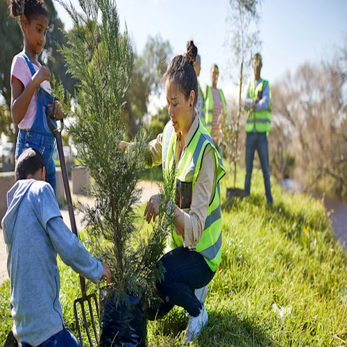
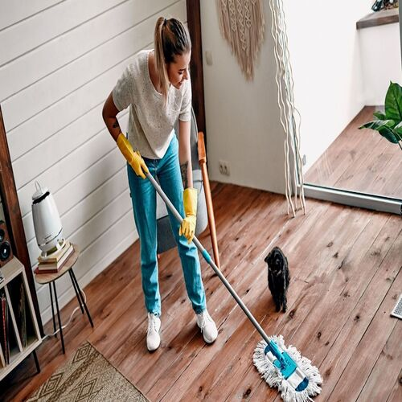
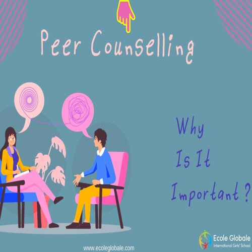

Hello, my name is Eric Cai and I am a 3rd year Psychology student who is planning on taking a double major within Global and Community Healthy and possibly a minor in Public Policy as well at University of California - Riverside (UCR). After which, I have plans to travel after graduation in order to broaden my cultural views and knowledge. Once I finish traveling, I plan on either going back to school to get a degree in mortuary (my true passion) or heading straight into the workforce either in some local government position or as a caretaker in an elderly home.
I was born on March 1, 2005 in the LA area in California. I am the youngest in my family by a large margin (there is a 6 year gap while everyone else is within 4 years of each other). My primary family included my father (a man of little words, but much love), my mother (an extremely extroverted and social woman who knew many), and my sister (6 years older than me, but we grew to be extremely close and we have each other's backs constantly). My extended family is quite large with numerous aunties, uncles, and cousins. Though we were all connected few our grandparents, though my grandma is the sole survivor, our family still all come around to be there for her. I had a relatively normal and active childhood growing up, though I have been noted to be have been rigorous in my academics, consistently performing well and winning some academic awards for my excellent academic performance. I had graduated my high school with the honor of Magna Cum Laude along with other honors related to both my academic performance and my participation within the peer counseling program (the program consisted of a full year of training, an interview, and then a full year of service as Peer Counselor). Along with doing well in my school years, I was also taking outside tutoring lessons to further my knowledge and abilities outside of the typical school environment. During all of this, I was slowly developing myself as an individual and discovering where I excelled and where I needed to put in more work. While I did struggle with social situations and connecting to others when I was younger, I had learned the necessary social skills in order to develop good relationships with many people who I still know and hold in high regard to this day. However, I believe that constantly working on oneself in every aspect is important towards becoming a model citizen while also maintaining positive relationships with life and with others.
Now in University, I am trying to put more time into truly discovering who I am as an individual. I have developed a wonderful and large network of friends, one of whom is my now current best friend in which we both support each other consistently in our ventures. I have been trying my hand at various hobbies (such as baking, cooking, gymming, etc.) and all have taught me valuable lessons about patience, care, and hard, consistent work. Of course I have to juggle my social life, personal life, and my academic life constantly, and while I may stumble at certain points, I never give up and take the mistake(s) as a learning opportunity to better improve myself and my capabilities. No matter what, I will always strive to be the best person I can be, regardless of the situation and environment.
• Make sure that my client is in good physical, mental, and social health
• Cleaning their residence
• Cooking various nutrious meals
• Did volunteer work for various environmental health groups
• Worked consistently and effectively with other volunteers
• Trained for a year on effective communication skills and resource management
• Held counseling sessions with students to assist with any personal troubles
• Guided students struggling with their academic performance
• Maintained consistent contact with various students and checked upon their academic progress throughout the year


